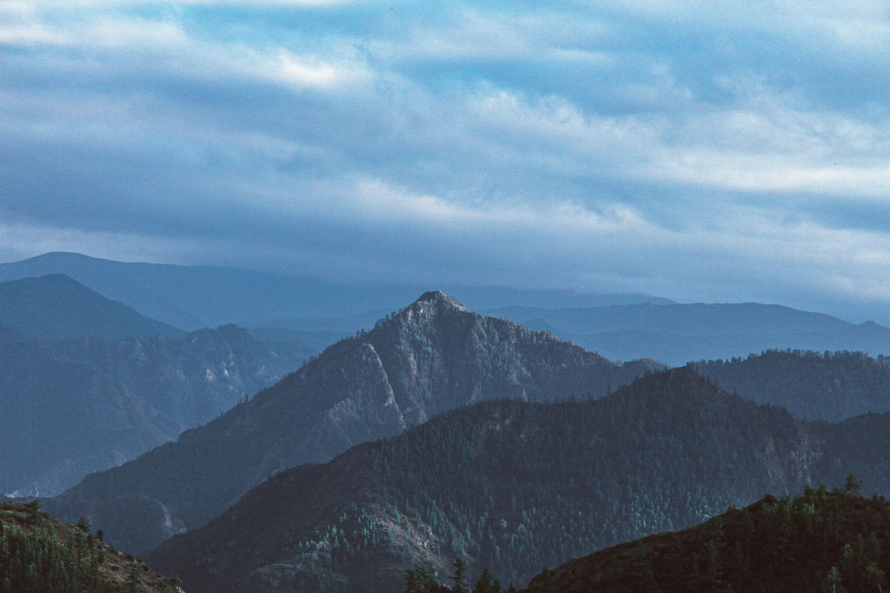

Восприятие места через человека
Смысл места появляется, когда конкретный человек рассказывает о своей малой родине и любимых местах, объясняет, почему остался или переехал, и как на него повлияла среда.
Проект «Друг» знакомит людей с людьми. Он прививает путь путешественника, а не туриста, и знакомит с отдалёнными уголками России через крафтовые материалы «из уст в уста».

Проект собирает сеть связей между людьми, даёт инструмент знакомства с регионом через подлинное общение и формирует новый взгляд на путешествия.
Смысл места появляется, когда конкретный человек рассказывает о своей малой родине и любимых местах, объясняет, почему остался или переехал, и как на него повлияла среда.
Доверие и полное погружение рождаются через личную речь с интонацией, детали рассказчика и его обстановки. Пересказ и редакционные колонки теряют это.
Доверие невозможно собрать дистанционно. В атмосферу, пантомимику рассказчика, его традиции, кухню и быт нельзя погрузиться удалённо.
История требует композиции. Лента даёт только фрагменты, а печатный артефакт становится материальным доказательством важности истории.
Постановка возвращает в туристическую оптику. Живые кадры позволяют заглянуть внутрь сцены и увидеть человека таким, какой он есть.
В экспедицию по региону едут те, кто в нём живёт. Работая над выпуском, молодые авторы находят в своём регионе новые связи и возможности.
Глубокие интервью и личные истории используют многие. Но эти практики остаются авторскими, не систематизированы и не могут быть переданы другим.
Сейчас работает первая часть. Остальные вырастают из неё по мере того, как накапливается материал и появляется аудитория.
Экспедиции, выпуски, зин и записанная методика работы с героем.
Обучение методике. Курс из шести модулей и практика с наставником.
Сообщество: лекции, разборы выпусков, показы и встречи с героями.
Культурный архив живых историй российских территорий.
Следить за экспедицией
Короткие заметки прямо с маршрута. Кого встретили, что снимаем сегодня, где застряли.